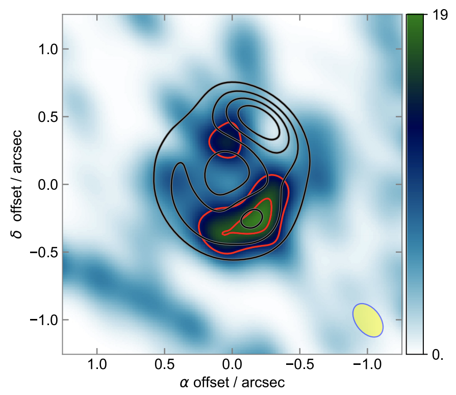
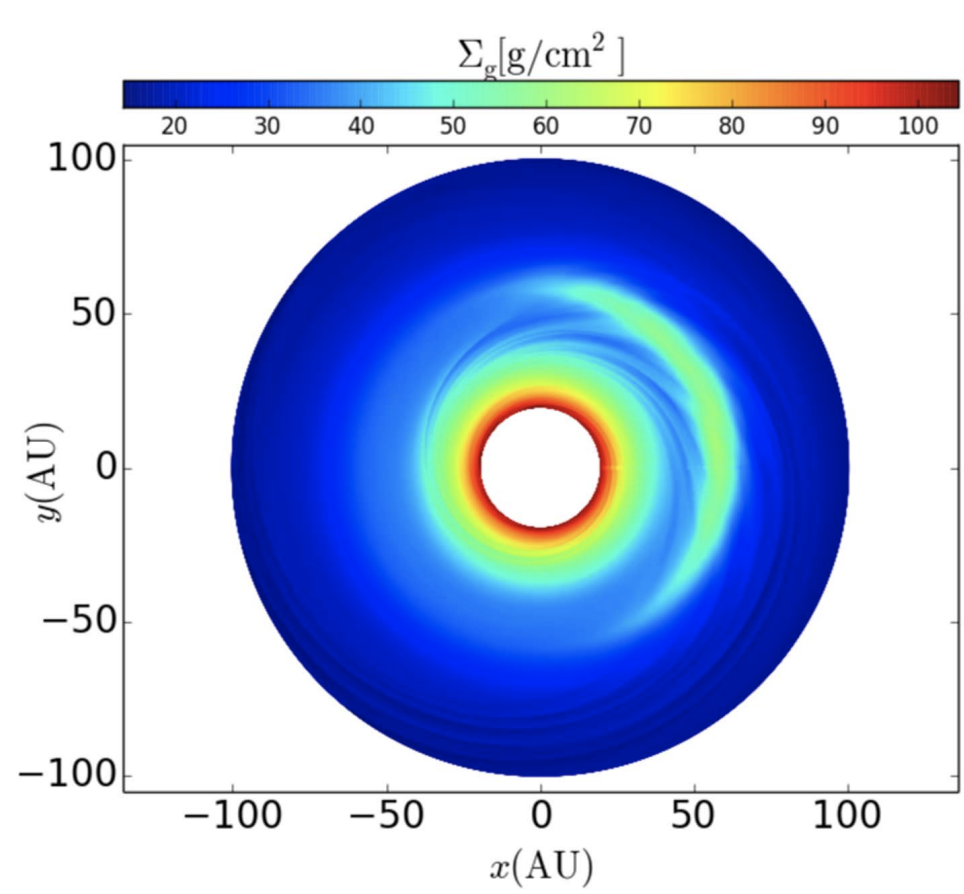

Papers
-

Exploring the Grain Properties in the Disk of HL Tau with an Evolutionary Model
Tapia et al. 2019
Abstract: We model the ALMA and Very Large Array (VLA) millimeter radial profiles of the disk around HL Tau to constrain the properties of the dust grains. We adopt the disk evolutionary models of Lynden-Bell & Pringle and calculate their temperature and density structure and emission. These disks are heated by the internal viscosity and irradiated by the central star and a warm envelope. We consider a dust size distribution n(a)da ∝ a^−3.5 da, and vary the maximum grain size in the atmosphere and the midplane, amax = 100 μm, 1 mm, and 1 cm. We also include dust settling and vary the dust-to-gas mass ratio from 1 to 9 times the ISM value. We find that the models that can fit the observed level of emission along the profiles at all wavelengths have an atmosphere with a maximum grain size amax = 100 μm, and a midplane with amax = 1 cm. The disk substructure, with a deficit of emission in the gaps, can be due to dust properties in these regions that are different from those in the rings. We test an opacity effect (different amax) and a dust mass deficit (smaller dust-to-gas mass ratio) in the gaps. We find that the emission profiles are better reproduced by models with a dust deficit in the gaps, although a combined effect is also possible. These models have a global dust-to-gas mass ratio twice the ISM value, needed to reach the level of emission of the 7.8 mm VLA profile.
Read Paper -

The Radial Distribution of Dust Particles in the HL Tau Disk from ALMA and VLA Observations
Carrasco-Gonzalez et al. 2019
Abstract: Understanding planet formation requires one to discern how dust grows in protoplanetary disks. An important parameter to measure in disks is the maximum dust grain size present. This is usually estimated through measurements of the dust opacity at different millimeter wavelengths assuming optically thin emission and dust opacity dominated by absorption. However, Atacama Large Millimeter /submillimeter Array (ALMA) observations have shown that these assumptions might not be correct in the case of protoplanetary disks, leading to overestimation of particle sizes and to underestimation of the disk’s mass. Here, we present an analysis of high-quality ALMA and Very Large Array images of the HL Tau protoplanetary disk, covering a wide range of wavelengths, from 0.8 mm to 1 cm, and with a physical resolution of ∼7.35 au. We describe a procedure to analyze a set of millimeter images without any assumption about the optical depth of the emission, and including the effects of absorption and scattering in the dust opacity. This procedure allows us to obtain the dust temperature, the dust surface density, and the maximum particle size at each radius. In the HL Tau disk, we found that particles have already grown to a few millimeters in size. We detect differences in the dust properties between dark and bright rings, with dark rings containing low dust density and small dust particles. Different features in the HL Tau disk seem to have different origins. Planet–disk interactions can explain substructure in the external half of the disk, but the internal rings seem to be associated with the presence of snow lines of several molecules.
Read Paper -

An Analytical Model of Radial Dust Trapping in Protoplanetary Disks
Sierra et al. 2019
Abstract: We study dust concentration in axisymmetric gas rings in protoplanetary disks. Given the gas surface density, we derived an analytical total dust surface density by taking into account the differential concentration of all grain sizes. This model allows us to predict the local dust-to-gas mass ratio and the slope of the particle size distribution, as a function of radius. We test this analytical model by comparing it with a 3D magnetohydrodynamical simulation of dust evolution in an accretion disk. The model is also applied to the disk around HD 169142. By fitting the disk continuum observations simultaneously at λ = 0.87, 1.3, and 3.0 mm, we obtain a global dust-togas mass ratio of 1.05 ×10^2 and a viscosity coefficient α = 1.35 × 10^−2. This model can be easily implemented in numerical simulations of accretion disks..
Read Paper -

Cm-wavelength observations of MWC 758: resolved dust trapping in a vortex
Casassus et al. 2019
Abstract: The large crescents imaged by ALMA in transition discs suggest that azimuthal dust trapping concentrates the larger grains, but centimetre–wavelengths continuum observations are required to map the distribution of the largest observable grains. A previous detection at ∼1 cm of an unresolved clump along the outer ring of MWC 758 (Clump 1), and buried inside more extended sub-mm continuum, motivates followup VLA observations. Deep multiconfiguration integrations reveal the morphology of Clump 1 and additional cm-wave components that we characterize via comparison with a deconvolution of recent 342 GHz data (∼1 mm). Clump 1, which concentrates ∼1/3 of the whole disc flux density at ∼1 cm, is resolved as a narrow arc with a deprojected aspect ratio χ > 5.6, and with half the azimuthal width than at 342 GHz. The spectral trends in the morphology of Clump 1 are quantitatively consistent with the LyraLin prescriptions for dust trapping in an anticyclonic vortex, provided with porous grains (f ∼ 0.2 ± 0.2) in a very elongated (χ ∼ 14 ± 3) and cold (T ∼ 23 ± 2 K) vortex. The same prescriptions constrain the turbulence parameter α and the gas surface density g through log10(α × Sigma/g cm−2) ∼ −2.3 ± 0.4, thus requiring values for Sigma larger than a factor of a few compared to that reported in the literature from the CO isotopologues, if α < 10−3. Such physical conditions imply an appreciably optically thick continuum even at cm-wavelengths (τ33 GHz ∼ 0.2). A secondary and shallower peak at 342 GHz is about twice fainter relative to Clump 1 at 33 GHz. Clump 2 appears to be less efficient at trapping large grains.
Read Paper -

Dust Concentration and Emission in Protoplanetary Disks Vortices
Sierra et al. 2017
Abstract: We study the dust concentration and emission in protoplanetary disks vortices. We extend the Lyra-Lin solution for the dust concentration of a single grain size to a power-law distribution of grain sizes. Assuming dust conservation in the disk, we find an analytic dust surface density as a function of the grain radius. We calculate the increase of the dust-to-gas mass ratio and the slope of the dust size distribution due to grain segregation within the vortex. We apply this model to a numerical simulation of a disk containing a persistent vortex. Due to the accumulation of large grains toward the vortex center, the dust-to-gas mass ratio increases by a factor of 10 from the background disk value, and decreases from 3.5 to 3.0. We find the disk emission at millimeter wavelengths corresponding to synthetic observations with ALMA and VLA. The simulated maps at 7 mm and 1 cm show a strong azimuthal asymmetry. This happens because, at these wavelengths, the disk becomes optically thin while the vortex remains optically thick. The large vortex opacity is mainly due to an increase in the dust-to-gas mass ratio. In addition, the change in the slope of the dust size distribution increases the opacity by a factor of two. We also show that the inclusion of the dust scattering opacity substantially changes the disks images.
Read Paper -

Imaging a Central Ionized Component, a Narrow Ring, and the CO Snowline in the Multigapped Disk of HD 169142
Macias et al. 2017
Abstract: We report Very Large Array observations at 7 mm, 9 mm, and 3 cm toward the pre-transitional disk of the Herbig Ae star HD 169142. These observations have allowed us to study the millimeter emission of this disk with the highest angular resolution so far (0 12 × 0 09, or 14 au × 11 au, at 7 mm). Our 7 and 9 mm images show a narrow ring of emission at a radius of ∼25 au tracing the outer edge of the inner gap. This ring presents an asymmetric morphology that could be produced by dynamical interactions between the disk and forming planets. Additionally, the azimuthally averaged radial intensity profiles of the 7 and 9 mm images confirm the presence of the previously reported gap at ∼45 au and reveal a new gap at ∼85 au. We analyzed archival DCO+(3–2) and C18O(2–1) ALMA observations, showing that the CO snowline is located very close to this third outer gap. This suggests that growth and accumulation of large dust grains close to the CO snowline could be the mechanism responsible for this proposed outer gap. Finally, a compact source of emission is detected at 7 mm, 9 mm, and 3 cm toward the center of the disk. Its flux density and spectral index indicate that it is dominated by free–free emission from ionized gas, which could be associated with the photoionization of the inner disk, an independent object, or an ionized jet.
Read Paper